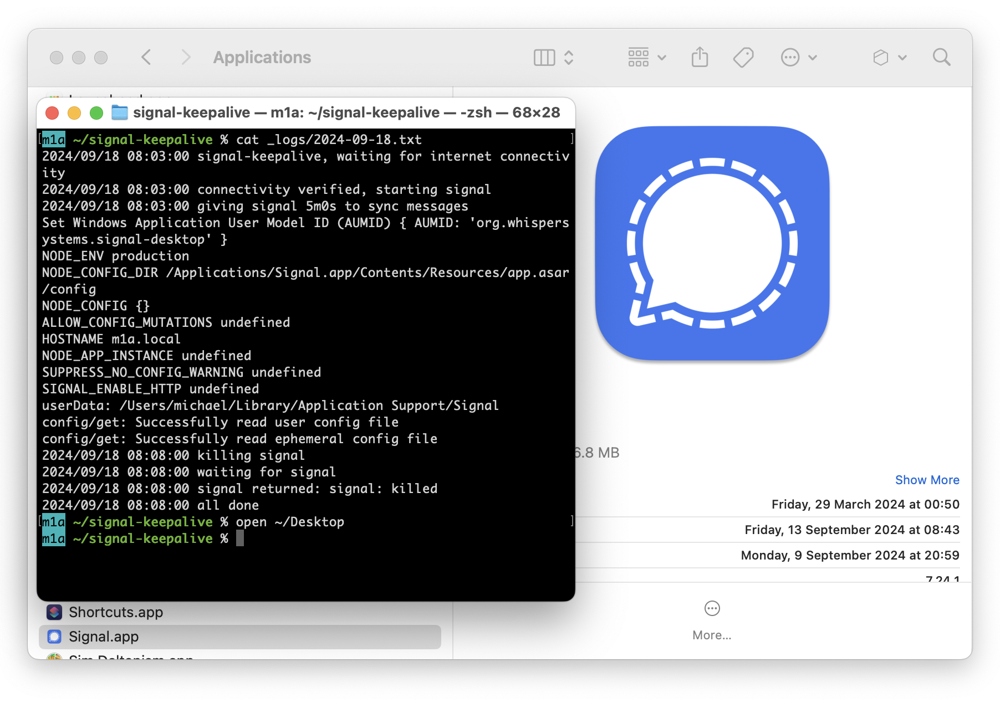

Table of contents
I have a couple of people who are best reachable on the Signal messaging app, but not that many. This exposes me to an awkward edge case of Signal’s design decisions: Whenever I get a message (on my phone), I want to reply to it (on my laptop) only to discover that Signal has un-linked my laptop because of inactivity and won’t sync the message history from my phone to my laptop, making it impossible to quote-reply to messages.
After complaining about this on Social Media for the n-th time, I figured I’d write a quick program to run Signal once a day, so that it won’t un-link my devices because of too long a period of inactivity. (Of course, the easiest solution would be to just run Signal in the background all the time. But I don’t use Signal often enough to justify letting it drain my battery and mobile data.)
In this article, I want to share the program in case it’s useful to anyone else, and also explain how to install it on a Mac, as this kind of “do a task once a day” automation is a useful pattern.

High-level sketch
- Run Signal for, say, 5 minutes.
- Ensure at-most-once semantics regardless of the task scheduler. For example,
if I wanted to start this program from an
@reboothook and restart my computer a few times, I don’t want the program to do anything after the first run of the day. (Similarly, an on-online hook of NetworkManager or similar software might fire once per network interface, or something like that.) - Depending on the specifics of the activation mechanism, the computer might be online or not. The program should wait for a little while, say, 10 minutes, until internet connectivity was established.
- I would like to log the program’s output (and Signal’s output) for debugging.
Checking connectivity
The easiest option is to just… not do a connectivity check at all, and hope for the best. This would probably work well enough in practice, but I would like the debug logs to have a high signal-to-noise ratio: If I have to debug why Signal was unlinked despite my automation attempts, I don’t want to comb through tons of spurious log messages that were a result from being offline. So, I want to check that I’m online before even starting Signal.
The most thorough option would be to somehow ask Signal programmatically whether it can connect to its servers and then wait until it can. I don’t think Signal has such an interface, so we’ll chose a middle-ground solution and work with a stand-in.
Using HTTP for connectivity checks is an easy way in today’s world. We just need
a target website that doesn’t go offline unless I want it to. So let’s just use
this website! Go’s net/http package that is included in Go’s standard library
makes this super easy:
func checkConnectivity() error {
_, err := http.Get("https://michael.stapelberg.ch/")
return err
}
Now we just need to loop around this single connectivity check:
func waitForConnectivity(timeout time.Duration) error {
const freq = 1 * time.Second
for start := time.Now(); time.Since(start) < timeout; time.Sleep(freq) {
if err := checkConnectivity(); err != nil {
log.Printf("connectivity check failed: %v", err)
continue
}
return nil // connectivity check succeeded
}
return fmt.Errorf("no connectivity established within %v", timeout)
}
We could improve this code to be more generally applicable by adding Exponential Backoff, but for this particular connectivity check, we should be fine even without Exponential Backoff.
Ensuring at-most-once semantics
An easy way to implement at-most-once semantics is to delegate to the file
system: we can specify the O_EXCL flag when creating our program’s log file to
make the first creation attempt proceed, but any further creation attempt fail
because the file already exists. We’ll then redirect the standard library’s
log package output to the log file:
logFn := filepath.Join(home, "signal-keepalive", "_logs", time.Now().Format("2006-01-02")+".txt")
f, err := os.OpenFile(logFn, os.O_RDWR|os.O_CREATE|os.O_EXCL, 0666)
if err != nil {
if os.IsExist(err) {
return nil // nothing to do, already ran today
}
return err
}
// Intentionally not closing this file so that even the log.Fatal()
// call in the calling function will end up in the log file.
log.SetOutput(f) // redirect standard library logging into this file
log.Printf("signal-keepalive, waiting for internet connectivity")
Not closing the file might seem weird at first, but remember that this is a short-lived program and the operating system closes all file handles of a process when it exits.
Full program code
For your convenience, here is the full program code. It contains a bunch of file system paths that you might want or need to adjust.
Click to expand: keepalive.go
package main
import (
"fmt"
"log"
"net/http"
"os"
"os/exec"
"path/filepath"
"time"
)
func checkConnectivity() error {
_, err := http.Get("https://michael.stapelberg.ch/")
return err
}
func waitForConnectivity(timeout time.Duration) error {
for start := time.Now(); time.Since(start) < timeout; time.Sleep(1 * time.Second) {
if err := checkConnectivity(); err != nil {
log.Printf("connectivity check failed: %v", err)
continue
}
return nil // connectivity check succeeded
}
return fmt.Errorf("no connectivity established within %v", timeout)
}
func keepalive() error {
// Limit to one attempt per day by exclusively creating a logfile.
home := os.Getenv("HOME")
if home == "" {
home = "/Users/michael"
}
logFn := filepath.Join(home, "signal-keepalive", "_logs", time.Now().Format("2006-01-02")+".txt")
f, err := os.OpenFile(logFn, os.O_RDWR|os.O_CREATE|os.O_EXCL, 0666)
if err != nil {
if os.IsExist(err) {
return nil // nothing to do, already ran today
}
return err
}
// Intentionally not closing this file so that even the log.Fatal()
// call in the calling function will end up in the log file.
log.SetOutput(f) // redirect standard library logging into this file
log.Printf("signal-keepalive, waiting for internet connectivity")
// Wait for network connectivity
if err := waitForConnectivity(10 * time.Minute); err != nil {
return err
}
// Start signal
log.Printf("connectivity verified, starting signal")
signal := exec.Command("/Applications/Signal.app/Contents/MacOS/Signal", "--start-in-tray")
signal.Stdout = f
signal.Stderr = f
if err := signal.Start(); err != nil {
return err
}
// Wait for some time to give Signal a chance to synchronize messages.
const signalWaitTime = 5 * time.Minute
log.Printf("giving signal %v to sync messages", signalWaitTime)
time.Sleep(signalWaitTime)
// Stop signal
log.Printf("killing signal")
if err := signal.Process.Kill(); err != nil {
return err
}
log.Printf("waiting for signal")
log.Printf("signal returned: %v", signal.Wait())
log.Printf("all done")
return f.Sync()
}
func main() {
if err := keepalive(); err != nil {
log.Fatal(err)
}
}
(Use go build keepalive.go to compile if you’re unfamiliar with Go.)
macOS installation: launchd
The corresponding piece of infrastructure to
systemd on Linux is called
launchd on macOS. Aside from managing
daemon processes, launchd also supports time-triggered program execution,
specifically via the StartCalendarInterval configuration option.
I followed Alvin Alexander’s blog post about launchd StartCalendarInterval examples and decided to configure my program to run at 08:03 each day:
Click to expand: net.zekjur.signalkeepalive.plist
<?xml version="1.0" encoding="UTF-8"?>
<!DOCTYPE plist PUBLIC "-//Apple Computer//DTD PLIST 1.0//EN"
"http://www.apple.com/DTDs/PropertyList-1.0.dtd">
<plist version="1.0">
<dict>
<key>StartCalendarInterval</key>
<dict>
<key>Hour</key>
<integer>8</integer>
<key>Minute</key>
<integer>3</integer>
</dict>
<key>Label</key>
<string>net.zekjur.signalkeepalive</string>
<key>Program</key>
<string>/Users/michael/signal-keepalive/signalkeepalive</string>
</dict>
</plist>
What happens when my computer isn’t running at 08:03, for example because the
lid is closed? Apple documents the behavior in the launchd.plist(5) man
page:
Unlike cron which skips job invocations when the computer is asleep, launchd will start the job the next time the computer wakes up.
To install and test this configuration:
- Copy the plist file to
~/Library/LaunchAgents - Run
launchctl load ~/Library/LaunchAgents/net.zekjur.signalkeepalive.plist - Run
launchctl start net.zekjur.signalkeepalive
In practice
It’s interesting to see this behavior in practice. Take note of the time stamps in the following log. The computer was not running at 08:03. At 08:18, it woke up to update background information (Apple calls this “Power Nap”), and then it suspended again (while Signal was running) until it woke up at 08:47 again:
2024/09/07 08:18:10 signal-keepalive, waiting for internet connectivity
2024/09/07 08:18:11 connectivity verified, starting signal
2024/09/07 08:18:11 giving signal 5m0s to sync messages
Set Windows Application User Model ID (AUMID) { AUMID: 'org.whispersystems.signal-desktop' }
NODE_ENV production
NODE_CONFIG_DIR /Applications/Signal.app/Contents/Resources/app.asar/config
NODE_CONFIG {}
ALLOW_CONFIG_MUTATIONS undefined
HOSTNAME m1a.fritz.box
NODE_APP_INSTANCE undefined
SUPPRESS_NO_CONFIG_WARNING undefined
SIGNAL_ENABLE_HTTP undefined
userData: /Users/michael/Library/Application Support/Signal
config/get: Successfully read user config file
config/get: Successfully read ephemeral config file
2024/09/07 08:47:31 killing signal
2024/09/07 08:47:31 waiting for signal
2024/09/07 08:47:31 signal returned: signal: killed
2024/09/07 08:47:31 all done
Linux installation: systemd
With systemd, we need two units. First, a signal-keepalive.service unit to
declare which program should be run:
cat > ~/.config/systemd/user/signal-keepalive.service <<'EOT'
[Unit]
Description=signal keepalive
After=network.target
[Service]
Type=oneshot
ExecStart=/home/michael/signal-keepalive/signalkeepalive
[Install]
WantedBy=default.target
EOT
And secondly, a signal-keepalive.timer unit which automatically starts the
signal-keepalive.service every day:
cat > ~/.config/systemd/user/signal-keepalive.timer <<'EOT'
[Unit]
Description=signal keepalive
[Timer]
Persistent=true
OnCalendar=daily
[Install]
WantedBy=timers.target
EOT
The Persistent=true line is important so that the program will be run even
when the computer is asleep when the timer would have fired.
Let’s enable the timer:
systemctl --user enable --now signal-keepalive.timer
For an initial test run, we can start the .service directly:
systemctl --user restart signal-keepalive.service
Conclusion
It’s silly that I need to go through so much trouble just because I don’t use Signal enough.
I also don’t understand why Signal can’t just sync message history from my phone to my computer when linking. WhatsApp and Telegram have no trouble doing it.
Either way, I thought this was a fun little refresher on automating periodic jobs.
I run a blog since 2005, spreading knowledge and experience for over 20 years! :)
If you want to support my work, you can buy me a coffee.
Thank you for your support! ❤️